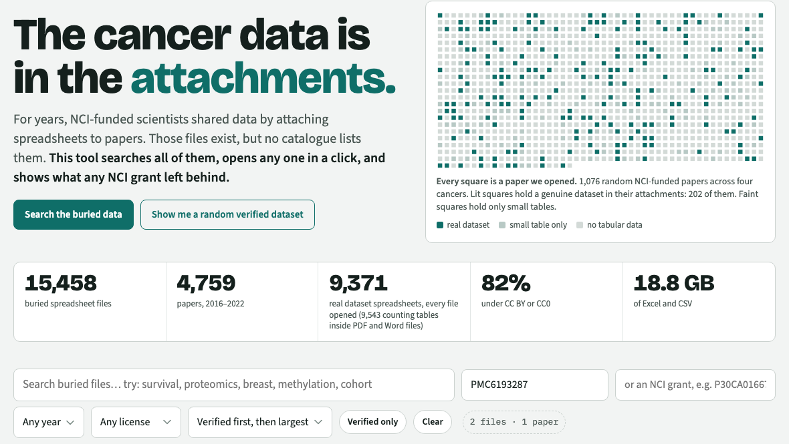

Attachment Rescue · Track 1 (Ideas) · Ochiai, Ojiro · every figure below can be reproduced from public data with the linked code
| NCI-funded open-access papers, 2016–2022, with attachments and no data-repository accession | Count |
|---|---|
| Papers checked (Europe PMC; no text-mined accession for GEO, SRA, dbGaP, EGA, ArrayExpress, PRIDE, BioProject, MetaboLights, PDB, GenBank) | 26,228 |
| Papers with a spreadsheet attachment · all their attachments downloaded and opened | 4,759 · 25,411 |
| Real datasets found* (in 3,736 papers, about 1 in 7 of all papers checked; 85% openly licensed) | 9,543 |
| …with no permanent identifier of their own (excluding ~2,200 in BMC and PLOS journals, which publishers already mirror to Figshare) | 7,335 |
| NCI grants credited by the papers with spreadsheets · their FY2016–2022 awards (NIH RePORTER) | 4,242 · $11.2B |
| Still happening: 2024–2025 papers doing the same (600-paper sample) | 23.2% |
| Not just cancer: NHLBI 14.9% · NIDDK 17.6% · NIMH 18.7% · NIA 20.5% · NINDS 23.8% (NCI 17.9%); 124,758 papers across all 24 institutes | NIH-wide |
*Dataset = largest table has at least 50 rows × 3 columns, or 1,000 rows. The strict rule leaves out small tables like the numbers behind one chart.
Papers holding a real dataset: glioblastoma 19.6% · breast 18.8% · colorectal 19.4% · leukemia 17.2%. All four together: 202 of 1,076 papers (18.8%); 156 (14.5%) as spreadsheets.
The four cancers agree within three points; the spreadsheet rate (14.5%) matches the full corpus (14.9%). We re-examined 90 of the classifier's decisions file by file, with the AI assistant, not blind; verdicts are published. All 60 files it called datasets were real data tables; every table it missed was under 50 rows. On 500 random papers, 15% mention a repository the text-mining missed.

Cited: FAIR-SMART (PMID 41066526) · Gobeill 2025 (PMC12371329) · Federer 2018, 2022 · Colavizza 2020 · Ghosh 2025 (PMC12782234) · Boja 2026 (PMC13479720) · Boyd 2026 (JNCI djag199) · CBIIT INS-Data.